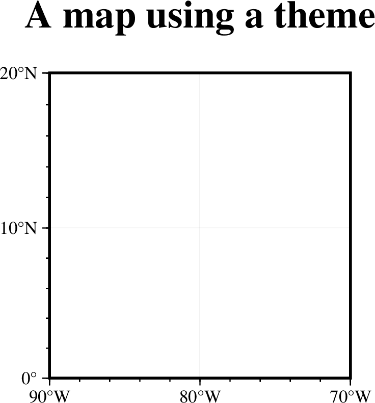
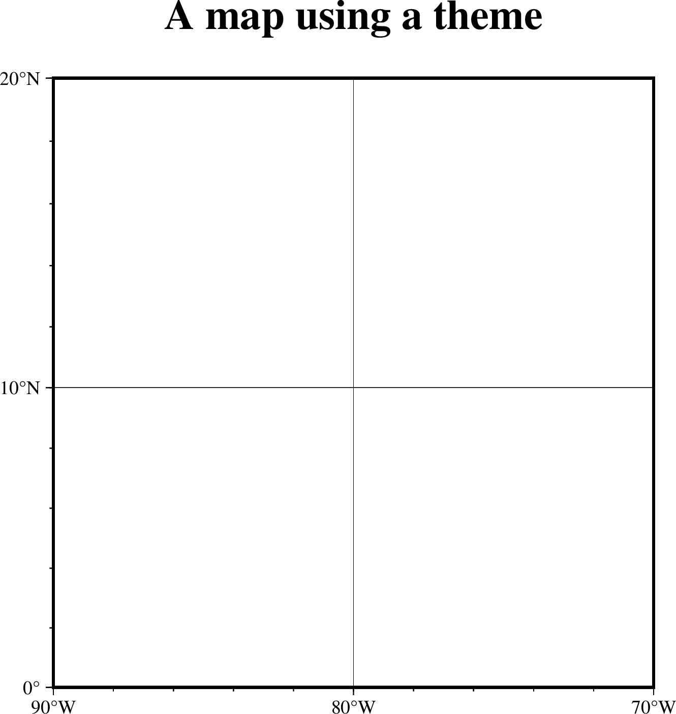
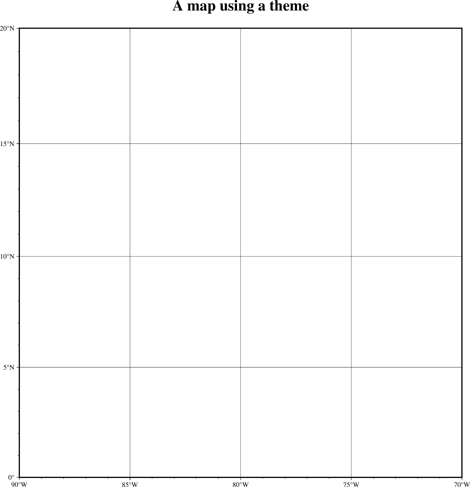
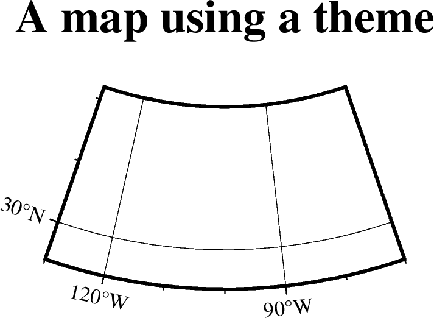
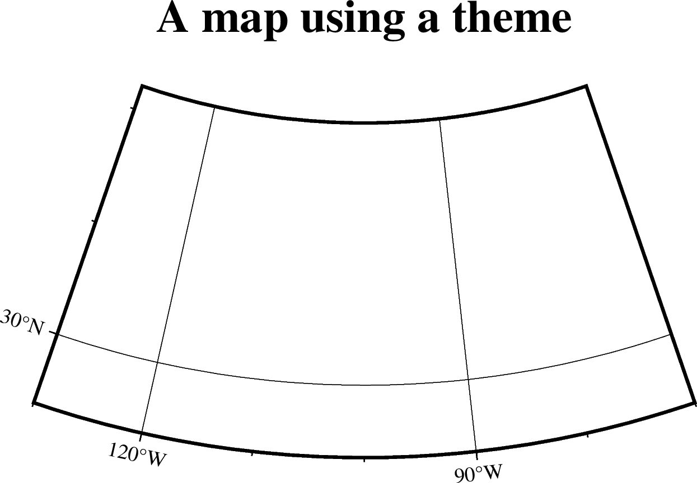
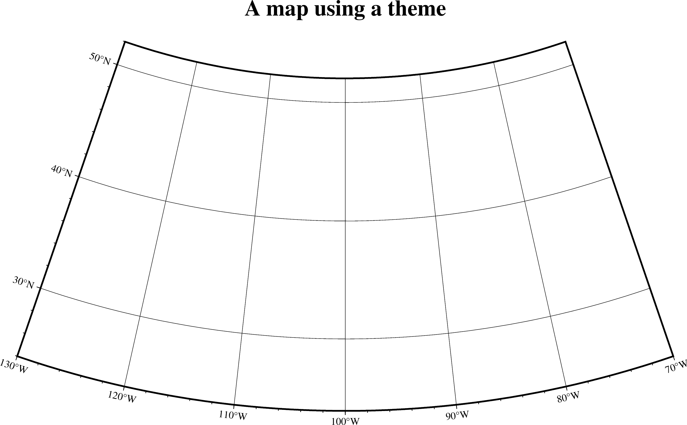
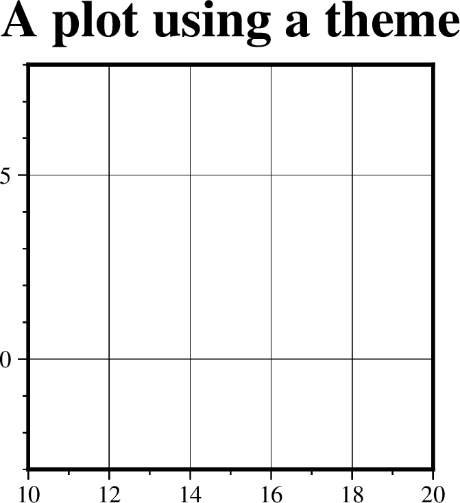
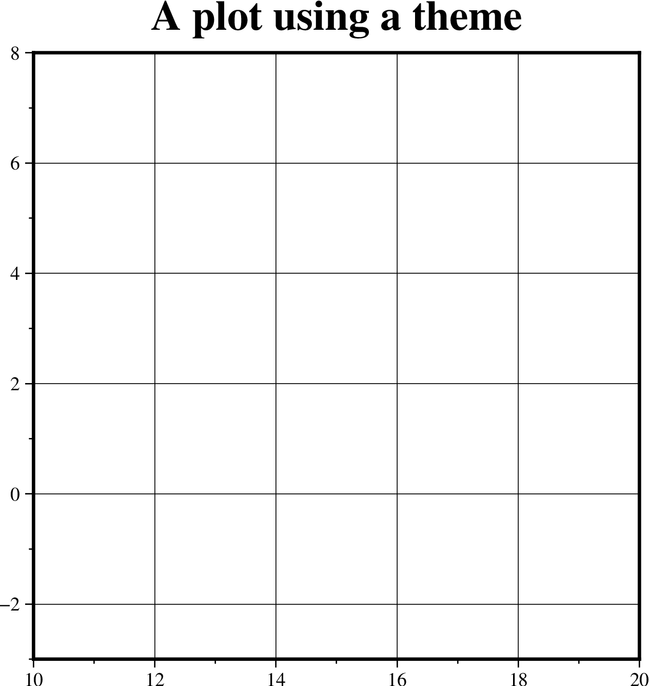
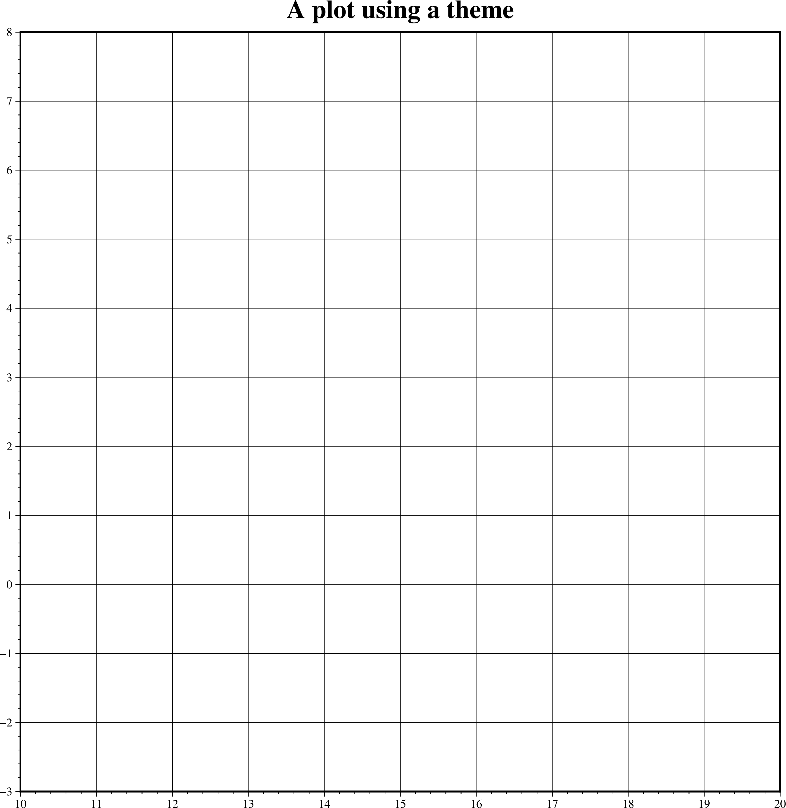

Alternative modern theme (Times, Plain frame)¶
Configuration settings for alternative modern theme (option 4)¶
Pameter |
Setting |
|---|---|
FONT_ANNOT_PRIMARY |
auto,Times-Roman,black |
FONT_ANNOT_SECONDARY |
auto,Times-Roman,black |
FONT_HEADING |
auto,Times-Bold,black |
FONT_LABEL |
auto,Times-Roman,black |
FONT_LOGO |
auto,Times-Roman,black |
FONT_TAG |
auto,Times-Roman,black |
FONT_TITLE |
auto,Times-Bold,black |
FORMAT_GEO_MAP |
ddd:mm:ssF |
MAP_FRAME_AXES |
WrStZ |
MAP_ANNOT_MIN_SPACING |
auto |
MAP_ANNOT_OFFSET_PRIMARY |
auto |
MAP_ANNOT_OFFSET_SECONDARY |
auto |
MAP_FRAME_TYPE |
plain |
MAP_HEADING_OFFSET |
auto |
MAP_LABEL_OFFSET |
auto |
MAP_TICK_LENGTH_PRIMARY |
auto |
MAP_TICK_LENGTH_SECONDARY |
auto |
MAP_TITLE_OFFSET |
auto |
MAP_VECTOR_SHAPE |
auto |
Mercator maps using alternative modern theme (option 4)¶
5 cm wide Mercator map using alternative modern theme #4¶

10 cm wide Mercator map using alternative modern theme #4¶

25 cm wide Mercator map using alternative modern theme #4¶

100 cm wide Mercator map using alternative modern theme #4¶

Lambert conic conformal maps using alternative modern theme (option 4)¶
5 cm wide Lambert map using alternative modern theme #4¶

10 cm wide Lambert map using alternative modern theme #4¶

25 cm wide Lambert map using alternative modern theme #4¶

100 cm wide Lambert map using alternative modern theme #4¶

Cartesian plots using alternative modern theme (option 4)¶
5 cm wide cartesian plot using alternative modern theme #4¶

10 cm wide cartesian plot using alternative modern theme #4¶

25 cm wide cartesian plot using alternative modern theme #4¶

100 cm wide cartesian plot using alternative modern theme #4¶